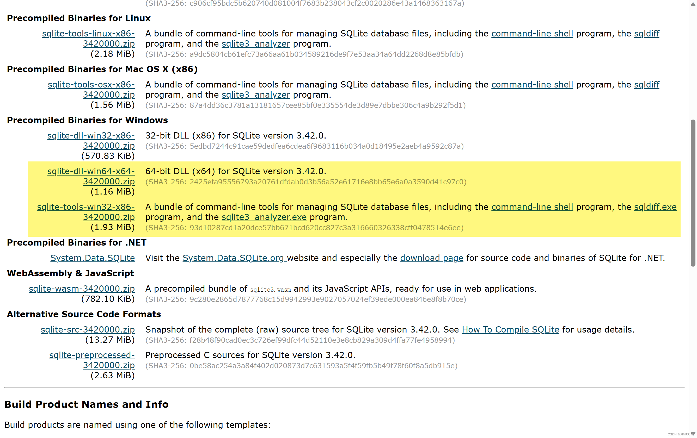
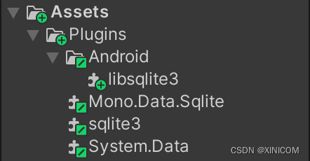

本文在此处不是首发
由于该平台的建设时间较晚，故而此处发表的文章中分享的技术，不保证在此处的发布日期时仍然有效。
原文 Unity 在安卓平台使用 SQLite 由本人于 2025年2月12日 发布在 CSDN 平台。
由于该平台的建设时间较晚，故而此处发表的文章中分享的技术，不保证在此处的发布日期时仍然有效。
原文 Unity 在安卓平台使用 SQLite 由本人于 2025年2月12日 发布在 CSDN 平台。
相信大家在进行 Unity 开发中使用
Sqlite
等数据库已经十分复杂了，而如果想要其打包出的平台上也可以使用就更麻烦了。下面为大家介绍一种，我实测有效的方法。
本人是新手，如有纰漏，敬请谅解并请在评论区指出，谢谢。
自己去unity编辑器的安装路径里面寻找和自己unity版本对应的文件。
我的文件放在：${UnityEditor安装路径}\Data\MonoBleedingEdge\lib\mono\gac\Mono.Data.Sqlite\4.0.0.0__0738eb9f132ed756\Mono.Data.Sqlite.dll
把该文件复制到你的项目下Assets/Plugins文件夹下面（没有该文件夹就自己创建一个）
自己去unity编辑器的安装路径里面寻找和自己unity版本对应的文件。
我的文件放在：${UnityEditor安装路径}\Data\MonoBleedingEdge\lib\mono\unity_web\System.Data.dll
把该文件复制到你的项目下Assets/Plugins文件夹下面（没有该文件夹就自己创建一个）
这个文件要去SQLite官网上下载，把以下显示的两个下载下来：

把下载下来的两个压缩包解压后，就可以看到sqlite3.dll了，把该文件复制到你的项目下Assets/Plugins文件夹下面（没有该文件夹就自己创建一个）
这个在这篇文章的资源绑定中寻找（应该会显示在文章顶部）
把该文件复制到你的项目下Assets/Plugins/Android文件夹下面（没有该文件夹就自己创建一个）
最后你的项目下面应该有这些：

新建 C# 脚本复制下面代码：
public class DataBaseManager
{
/// <summary>
/// 数据库链接
/// </summary>
private SqliteConnection dbConnection;
/// <summary>
/// 数据库命令
/// </summary>
private SqliteCommand dbCommand;
/// <summary>
/// 数据库读取器
/// </summary>
private SqliteDataReader reader;
/// <summary>
/// 连入数据库,并打开
/// </summary>
/// <param name="name">数据库名字</param>
public void ConnectingDatabase(string name)
{
string Path = string.Empty;
#if UNITY_EDITOR
Debug.Log(Application.dataPath);
Path = Application.dataPath + "/StreamingAssets/" + name;
#elif UNITY_ANDROID
Path = Application.persistentDataPath + "/" + name;
if (!File.Exists(Path))
{
using(UnityWebRequest UWR = UnityWebRequest.Get("jar:file://" + Application.dataPath + "!/assets/" + name))
{
UWR.SendWebRequest();
while (!UWR.isDone)
{
Debug.Log("数据加载中");
}
if (UWR.result == UnityWebRequest.Result.ConnectionError)
{
Debug.LogError($"加载出错\n{UWR.result}");
return;
}
File.WriteAllBytes(Path, UWR.downloadHandler.data);
Debug.Log("数据加载完成");
}
}
#endif
OpenDB("URI=file:" + Path);
}
/// <summary>
/// 打开数据库
/// </summary>
/// <param name="connectionString">连接名</param>
public void OpenDB(string connectionString)
{
try
{
if (dbConnection == null)
{
dbConnection = new SqliteConnection(connectionString);
}
dbConnection.Open();
}
catch (Exception e)
{
Debug.LogError(e.ToString());
}
}
/// <summary>
/// 关闭数据库
/// </summary>
public void CloseSqlConnection()
{
if (dbCommand != null)
{
dbCommand.Dispose();
}
dbCommand = null;
if (reader != null)
{
reader.Dispose();
}
reader = null;
if (dbConnection != null)
{
dbConnection.Dispose();
}
dbConnection.Close();
dbConnection = null;
}
/// <summary>
/// 执行SQL语句
/// </summary>
/// <param name="sqlQuery">SQL语句</param>
/// <returns>SQL读取器</returns>
public SqliteDataReader ExecuteQuery(string sqlQuery)
{
dbCommand = dbConnection.CreateCommand();
dbCommand.CommandText = sqlQuery;
reader = dbCommand.ExecuteReader();
return reader;
}
/// <summary>
/// 读取整个表格
/// </summary>
/// <param name="tableName">表格名</param>
/// <returns>SQL读取器</returns>
public SqliteDataReader ReadFullTable(string tableName)
{
string query = "Select * From " + tableName;
return ExecuteQuery(query);
}
/// <summary>
/// 读取整个表格
/// </summary>
/// <param name="tableName">表格名</param>
/// <returns>字符串</returns>
public string ReadFullTable_ToString(string tableName)
{
string text = string.Empty;
ReadFullTable(tableName);
while (reader.Read())
{
string str = string.Empty;
for (int i = 0; i < reader.FieldCount; i++)
{
str += reader.GetValue(i);
str += ";";
}
str = str.Substring(0, str.Length - 1);
text += str;
text += '\n';
}
text = text.Substring(0, text.Length - 1);
return text;
}
}
这里我使用了SQLiteStudio，用它创建数据库，并把数据库文件放在你的项目下面的Assets/StreamingAssets文件夹下（没有该文件夹就自己创建一个）
首先调用ConnectingDatabase(string name)连接到数据库 之后使用ExecuteQuery(string sqlQuery)执行SQL命令 同时也可以使用ReadFullTable_ToString(string tableName)和(string tableName)快速调用整个表格